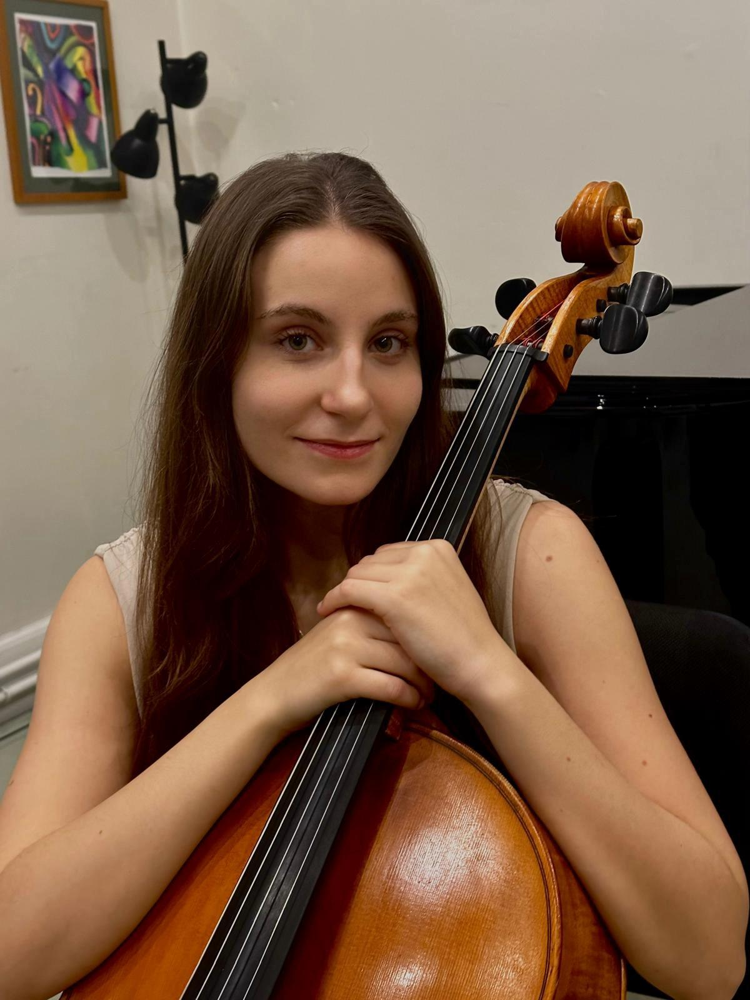

Teresa Nonnato is a 18-year-old cellist from Italy, who is completing her studies at the Purcell School for Young Musicians in England. Teresa approached music at the age of six: whilestarting to play piano and building the foundations of what would later be her passion, she approached the cello at the age of seven. From that moment, Teresa nurtured a passion for music and learning the instrument, which led to the beginning of her career.
In Italy, Teresa finished middle school with a grade of 10 cum laude, and the first year of scientific high school. She finished her preparatory years at the Antonio Buzzolla Conservatory in Adria where she was able to study with various teachers such as the composer Tiziano Bedetti. Over the years, she has studied cello with Luca Paccagnella, Luca Simoncini, Luca Fiorentini, Miriam Prandi, Hannah Roberts, Elizabeth Wilson, Giovanni Gnocchi, Melissa Phelps, Josephine Knight, David Waterman, Cristoph Richter and Pal Banda. Furthermore, she perfected her theoretical studies in Turin at the IMUSE school with the composer Andrea Damiano Cotti.
She has played in several concerts in Italy and abroad, in cities such as Venice, Turin, Chieti, Sacile, Livorno and London. She has participated in several solo and chamber music masterclasses in various Italian regions and England and has participated in international competitions achieving high scores. She plays regularly in orchestras and has her own chamber group. She had the opportunity to perfect her chamber music studies with distinguished teachers like Antonello Farulli, Elizabeth Wilson and Alex Redington. She has had her debut as a soloist with the North Norfolk Sinfonia, playing Marie Jaell Cello Concerto in F Major in Sheringham, and her debut as a Chamber musician in great venues in London like Wigmore Hall, Cadogan Hall, Milton Court and St. James Smith Square.
She owns a cello by luthier Benito Tosello from 2007, and currently plays on a cello loaned by her teacher Pal Banda.
Teresa has been sponsored since September 2021 by the Mr&Mrs Gee Charitable Trust, who help her towards her aim of being a professional musician.
She has successfully auditioned to various Universities of Music in the UK and in Germany for her Bachelor Programme, whereas The Royal College of Music and Hanns Eisler Hochschule für Musik in Berlin, but she has chosen to pursue her studies at The Royal Academy of Music under the guidance of Mr. Christoph Richter, where she's been awarded a scholarship of merit.
In her free time Teresa enjoys her academic studies, reading and watching movies. She likes going to the theater and the cinema and when possible being with her loved ones.
London
Manchester